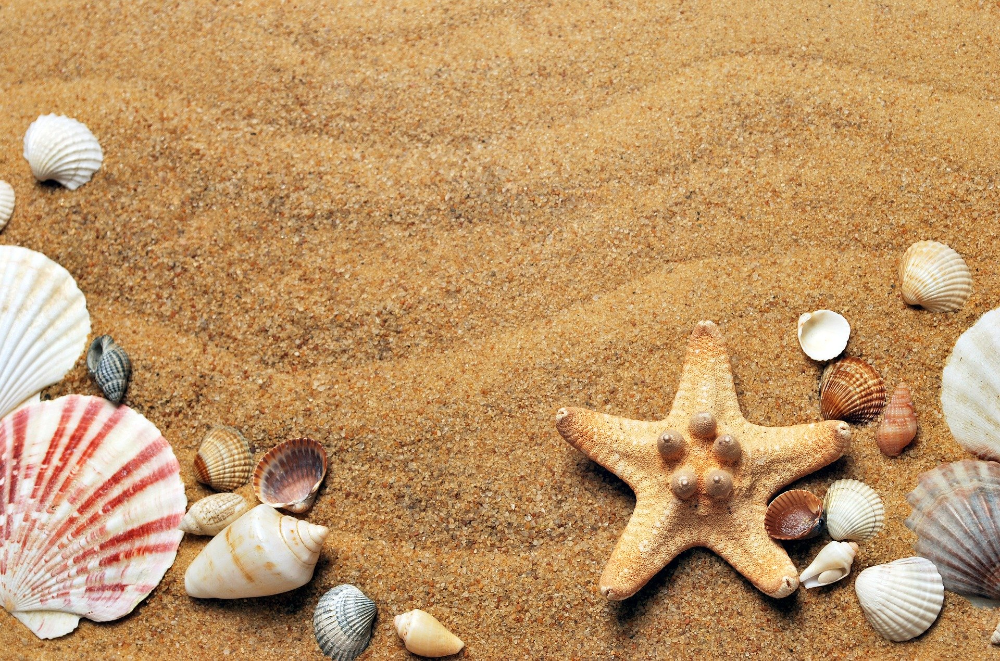
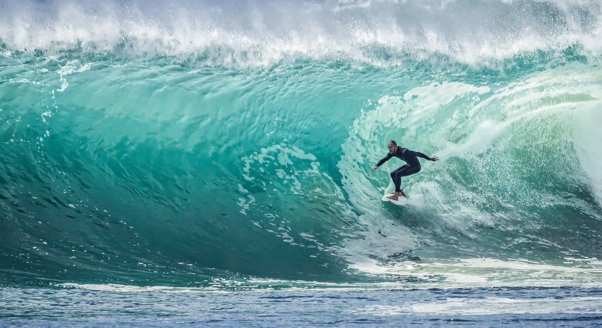
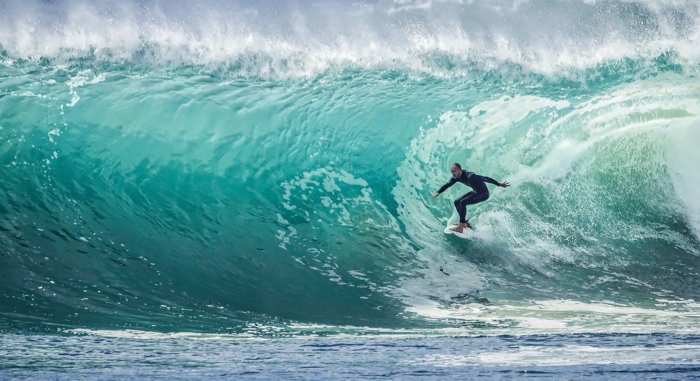

El surf ha dejado de ser únicamente un deporte, para convertirse para muchos en un estilo de vida. Esta forma de ver el mundo consiste en tener un gran contacto con la naturaleza, buscar aventuras, grandes olas y recorrer el planeta en busca de los mejores países para surfear. Al final, se trata de buscar las mejores playas del mundo, aquellas que tengan las olas más grandes, largas y/o radicales, que consigan hacerte sentir la adrenalina de este deporte. Una combinación que mezcla el propio entorno del spot, la calidad y variedad de sus olas, su naturaleza, su tipo de fondo marino, su prestigio, y, sobre todo, su magia.
La historia del surf moderno no se hace notoria hasta principios del Siglo XX, sin embargo, su crecimiento ha sido completamente exponencial a partir de ese momento. Con la música de los Beach Boys se empieza a buscar la ola perfecta, se realizan viajes por las playas con las mejores olas del mundo y se crea una cultura que dura hasta nuestros días.
Esta revolución global ha hecho que en el mundo existan varios lugares para hacer surf que se han convertido en refererencia surfera, lugares de peregrinación para cualquier amante de este deporte. En nuestra escuela de surf, hemos creado este artículo en el que os vamos a mostrar los 10 mejores países del mundo para surfear. En él, haremos un repaso de las mejores olas de cada uno de ellos y de por qué es un país destacado para surfear.

Sudáfrica es uno de los mejores países para surfear, ya posee algunas de las playas más impresionantes del mundo. De hecho, una de sus bahías está entre las más deseadas dentro del mundo del surf: La bahía de Jeffrey, situada junto a Port Elizabeth. JBay, como es conocida popularmente esta bahía, ofrece una de las mejores derechas del planeta. La denominada «Supertubes» es una ola de derechas con una perfecta forma de tubo, solo apta para profesionales de este deporte. Junto a esta singular ola, se sitúan una colección de spots de diferentes estilos y niveles, perfectos para todo tipo de público, tales como Kitchen Windosw, The Point o Albatross.
España es uno de los países más destacados del mundo, y se sitúa a la cabeza del surf en Europa. Como ya tratamos las diferentes playas de España en nuestro artículo «¿Dónde Surfear en España?» haremos un breve resumen:
En el Norte de España tenemos varias comunidades autónomos destacadas por sus magníficas playas para surfear. Empezando de Este a Oeste:
País Vasco ofrece una gran variedad de spots para surfear. Zarautz, situada en la provincia de Guipúzcoa ofrece una amplia extensión de terreno con olas de todos los estilos, pero es Mundaka en Vizcaya la playa más famosa del País Vasco. Situada junto a la ría de Gernika, la ola de Mundaka es una de las mejores izquierdas de Europa. Se trata de una ola tubular que puede llegar a superar los 5 metros en su amplia longitud. Otra zona llamativa es Biarritz con sus más de seis playas surfeables.
En México, el surf es cada vez más popular en las zonas costeras, haciéndolo uno de los mejores países para surfear y probar este deporte. Los jóvenes mexicanos se interesan cada vez más por este deporte acuático y por el estilo de vida que lo acompaña. Además, este paraíso tropical ofrece uno de los entornos naturales más encantadores para la practica de esta disciplina.
En el estado de Oaxaca en Puerto Escondido se sitúa el llamada Pipeline mexicano, la playa de Zicatela. Esta playa mexicana es uno de los mejores lugares para hacer surf del mundo, ya que posee unas olas rápidas, altas y potentes, es decir, adrenalina en estado puro. Si estas empezando a surfear, también tienes la opción de ir a La Punta, una zozna con olas más pequeñas, acordes a tu nivel.

 
